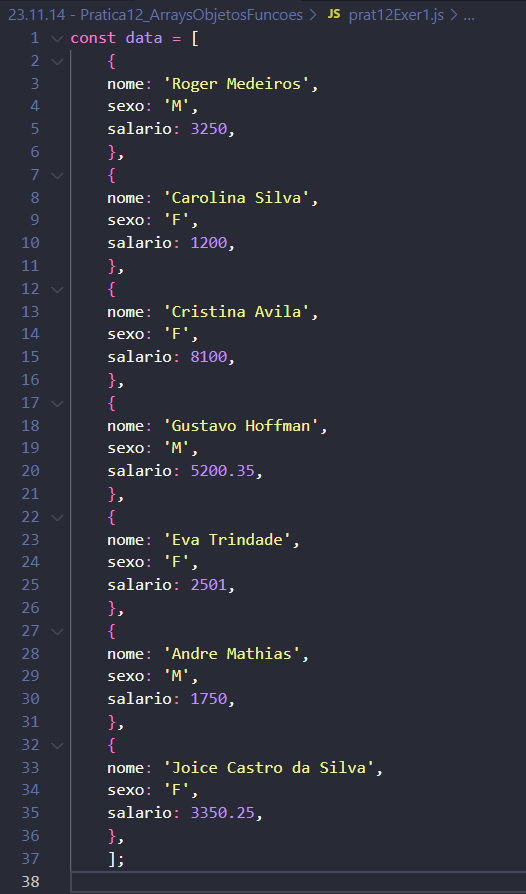

Atividade Prática 12 - Arrays, Objetos e Funções
Exercício 1
Crie um arquivo com o script necessário para resolução do exercício considerando o seguinte array:

- Imprima no console a quantidade de pessoas Total.
- Imprima no console a quantidade de pessoas do sexo Feminino.
- Imprima no console a soma do salário de todas as pessoas.
- Imprima no console a média do salário de todas as pessoas.
- Imprima no console a soma do salário de todos as pessoas do sexo Masculino
- Imprima no console a média do salário de todas as pessoas do sexo Masculino
- Utilize a função Some, para descobrir se existe algum salário superior a R$ 7.000, imprima verdadeiro no console caso exista, caso contrário falso.
- Utilize a função findIndex, para descobrir a posição da pessoa de nome 'Eva Trindade'.
- Utilize a função filter, para filtrar todas pessoas que o nome possua o sobrenome "Silva".
- Imprima os nomes utilizando o MAP
Respostas: